Fault Tolerance Mental Model
Core Idea: Everything Fails, All the Time
Werner Vogels, CTO of Amazon, famously said: “Everything fails, all the time.” This is not pessimism — it is the foundational design principle of cloud computing.
At the scale of a hyperscaler data center, hardware failure is not an exceptional event. It is a statistical certainty. With hundreds of thousands of servers, at any given moment, several are failing. Disks are dying, memory is corrupting, network links are flapping, power supplies are tripping. The question is not whether failures will occur, but whether your system is designed to tolerate them.
FAILURE IS A CERTAINTY AT SCALE
================================
Annual failure rates (approximate):
- Hard drive: 2-4% per year
- Server: 2-5% per year
- Network link: 5-10% per year (partial degradation)
- Power supply: 1-3% per year
- Top-of-rack switch: 5-8% per year
If you have 100,000 servers:
- 2,000-5,000 server failures per year
- ~6-14 server failures per day
- Something is failing every 2-4 hours
At this scale, failure is not an event. It is a constant.
MTBF and MTTR: The Two Numbers That Matter
Reliability engineering revolves around two fundamental metrics:
MTBF (Mean Time Between Failures)
How long a component runs, on average, before it fails. For a hard drive with an MTBF of 1,000,000 hours, on average one drive in a fleet of 1,000 will fail every 1,000 hours (about every 42 days).
MTTR (Mean Time To Recovery)
How long it takes to detect a failure and restore service. This includes detection time, diagnosis time, repair/replacement time, and recovery time.
The Availability Formula
Availability = MTBF / (MTBF + MTTR)
Example:
MTBF = 1,000 hours
MTTR = 1 hour
Availability = 1000 / (1000 + 1) = 99.9%
KEY INSIGHT: You can improve availability by:
1. Increasing MTBF (make things fail less) -- hard, expensive
2. Decreasing MTTR (recover faster) -- easier, cheaper
Cloud philosophy: ACCEPT that things fail. MINIMIZE recovery time.
Focus on MTTR, not MTBF.
Availability Math: The Nines
Availability is measured in “nines.” Each additional nine represents a 10x reduction in allowed downtime.
| Availability | Downtime/Year | Downtime/Month | Downtime/Day |
|---|---|---|---|
| 99% (two 9s) | 3.65 days | 7.3 hours | 14.4 minutes |
| 99.9% | 8.76 hours | 43.8 minutes | 1.44 minutes |
| 99.95% | 4.38 hours | 21.9 minutes | 43.2 seconds |
| 99.99% | 52.6 minutes | 4.38 minutes | 8.64 seconds |
| 99.999% | 5.26 minutes | 26.3 seconds | 864 ms |
Serial vs Parallel Systems
Serial (all must work): If any component fails, the system fails. The overall availability is the product of individual availabilities.
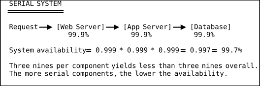
Parallel (any one must work): If any copy works, the system works. The failure probability is the product of individual failure probabilities.
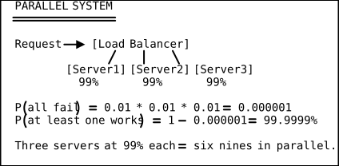
The Practical Formula
Real systems combine serial and parallel paths:
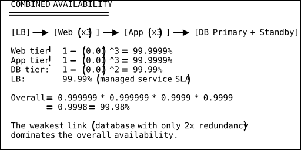
Redundancy Patterns
Active-Active
All copies serve traffic simultaneously. If one fails, the others absorb its load. This is the most common pattern for stateless services.
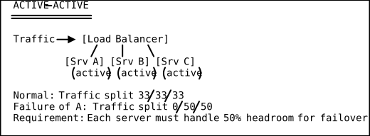
Active-Passive (Hot Standby)
The primary handles all traffic. The standby is running and ready but receives no traffic. On failure, traffic switches to the standby.
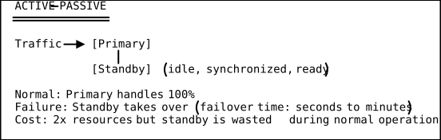
N+1 Redundancy
If you need N components to handle the load, provision N+1. If any one fails, you still have N functioning components.
N+1 REDUNDANCY
===============
Need: 4 servers to handle peak load
Provision: 5 servers
Normal: Load spread across 5 (each at 80% capacity)
Failure of 1: Load spread across 4 (each at 100% capacity)
N+1 is more cost-effective than 2N (full duplication).
N+2 is used for maintenance windows (1 down for maintenance,
1 can fail simultaneously).
Blast Radius Thinking
Blast radius is the scope of impact when something fails. Designing for small blast radius means a failure affects as few users as possible.
BLAST RADIUS HIERARCHY
=======================
Blast Radius Scope of Impact Example
-------------- ---------------------- -------------------------
Process One request fails Null pointer exception
Container One microservice down OOM kill
Instance One server down Hardware failure
Rack ~20-40 servers down Top-of-rack switch fails
Availability Thousands of servers Power/cooling failure
Zone (AZ)
Region All AZs in a region Natural disaster
Global Everything everywhere DNS failure, BGP hijack
Design principle: Contain failures at the smallest possible level.
A process crash should not take down a container.
A container crash should not take down an instance.
An AZ failure should not take down the application.
Failure Domains: Server, Rack, AZ, Region
Cloud providers organize infrastructure into nested failure domains. Understanding these domains is essential for designing resilient systems.
Server
The smallest unit. A single physical machine. Failure causes: hardware fault, kernel panic, disk corruption. Impact: one instance dies.
Rack
A physical rack containing 20-40 servers, sharing a top-of-rack (ToR) switch and power distribution unit (PDU). Failure causes: ToR switch failure, PDU failure. Impact: all servers in the rack go offline.
Availability Zone (AZ)
One or more data center buildings with independent power, cooling, and networking. Failure causes: power grid outage, cooling system failure, network partition. Impact: all servers in the AZ go offline. AZs within a region are connected by low-latency links (<2ms) but are physically separate (miles apart).
Region
A geographic collection of 2-6 AZs. Failure causes: regional natural disaster, widespread network outage. Impact: all AZs in the region go offline. Regions are fully independent.
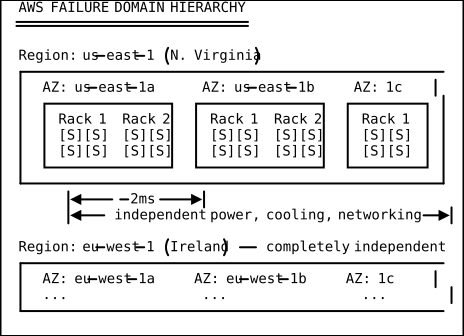
Design for Each Failure Domain
| Failure Domain | Design Pattern | AWS Example |
|---|---|---|
| Server | Auto Scaling replaces failed instances | ASG health checks |
| Rack | Spread placement groups across racks | Spread placement group |
| AZ | Deploy across multiple AZs | Multi-AZ RDS, cross-AZ ALB |
| Region | Deploy across multiple regions | Route 53 failover routing |
| Global | DNS failover, CDN, data replication | CloudFront, Global Accelerator |
Chaos Engineering: Proving Resilience
Chaos engineering is the practice of deliberately injecting failures into a production system to verify that it can tolerate them. Netflix pioneered this with their “Simian Army.”
Netflix Chaos Monkey
Chaos Monkey randomly terminates EC2 instances in production during business hours. The philosophy: if your system cannot tolerate a random instance death during the day, when engineers are watching, how will it survive an instance death at 3 AM on a Saturday?
Chaos Engineering Principles
THE CHAOS ENGINEERING LOOP
===========================
1. Define steady state (what does "healthy" look like?)
Example: 99th percentile latency < 200ms, error rate < 0.1%
2. Hypothesize that steady state continues during failure
"If we kill one web server, latency stays under 200ms"
3. Inject failure (the experiment)
Terminate an instance, block a network port, fill a disk
4. Observe the system
Did the hypothesis hold? Did metrics stay within bounds?
5. Learn and improve
If the hypothesis failed, fix the vulnerability
If it held, increase the scope of the next experiment
TOOLS:
- Netflix Chaos Monkey (instance termination)
- AWS Fault Injection Simulator (managed chaos)
- Gremlin (commercial chaos platform)
- Litmus (Kubernetes chaos engineering)
- Chaos Toolkit (open source framework)
Circuit Breaker Pattern
The circuit breaker pattern prevents cascading failures. When a downstream service starts failing, the circuit breaker “trips” and immediately returns an error (or fallback) instead of waiting for timeouts.
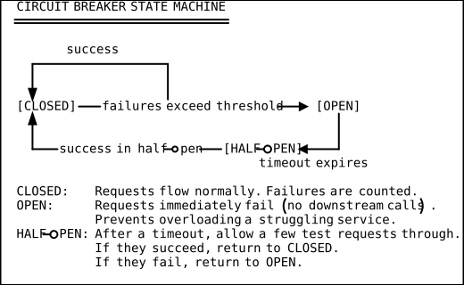
Code Example (Pseudocode)
class CircuitBreaker:
def __init__(self, failure_threshold=5, reset_timeout=30):
self.failure_count = 0
self.failure_threshold = failure_threshold
self.reset_timeout = reset_timeout # seconds
self.state = "CLOSED"
self.last_failure_time = None
def call(self, func, *args):
if self.state == "OPEN":
if time.now() - self.last_failure_time > self.reset_timeout:
self.state = "HALF_OPEN"
else:
raise CircuitOpenError("Service unavailable")
try:
result = func(*args)
if self.state == "HALF_OPEN":
self.state = "CLOSED"
self.failure_count = 0
return result
except Exception as e:
self.failure_count += 1
self.last_failure_time = time.now()
if self.failure_count >= self.failure_threshold:
self.state = "OPEN"
raise eRetry with Exponential Backoff
When a request fails, retrying immediately can make things worse (thundering herd). Exponential backoff spaces retries out with increasing delays and added randomness (jitter).
EXPONENTIAL BACKOFF WITH JITTER
================================
Attempt 1: wait 0ms (immediate)
Attempt 2: wait base * 2^1 + jitter (~200ms + rand)
Attempt 3: wait base * 2^2 + jitter (~400ms + rand)
Attempt 4: wait base * 2^3 + jitter (~800ms + rand)
Attempt 5: wait base * 2^4 + jitter (~1600ms + rand)
Give up after max_retries
Formula:
delay = min(base * 2^attempt + random(0, base), max_delay)
Why jitter?
Without jitter, all clients retry at the same time (thundering herd).
With jitter, retries are spread across time.
AWS SDK default: base=100ms, max_delay=20s, max_retries=3
Code Example
import time
import random
def retry_with_backoff(func, max_retries=5, base_delay=0.1, max_delay=30):
for attempt in range(max_retries):
try:
return func()
except TransientError:
if attempt == max_retries - 1:
raise
delay = min(base_delay * (2 ** attempt), max_delay)
jitter = random.uniform(0, base_delay)
time.sleep(delay + jitter)Health Checks and Self-Healing
Cloud systems use automated health checks to detect failures and trigger automatic recovery.
Types of Health Checks
HEALTH CHECK TYPES
===================
1. TCP Health Check (L4)
"Can I open a TCP connection to port 80?"
Checks: process is listening
Misses: application errors, dependency failures
2. HTTP Health Check (L7)
"Does GET /health return 200?"
Checks: application is responding
Misses: deep dependency failures
3. Deep Health Check
"Does GET /health/deep return 200?"
Checks: app AND database AND cache AND external APIs
Risk: false positives (external dependency down != this instance bad)
4. Liveness Probe (Kubernetes)
"Is the process alive and responsive?"
Failure action: restart the container
5. Readiness Probe (Kubernetes)
"Is the process ready to serve traffic?"
Failure action: remove from load balancer (don't restart)
Self-Healing Pipeline
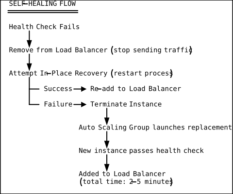
Real-World Outage Examples and Lessons
AWS us-east-1 S3 Outage (February 2017)
What happened: An engineer, while debugging a billing system issue, accidentally ran a command that removed more S3 servers than intended. The S3 subsystem in us-east-1 went offline for about 4 hours.
Blast radius: Hundreds of websites, apps, and services that stored assets in S3 us-east-1 went down, including many that displayed blank pages because they fetched images and scripts from S3.
Lessons:
- Do not store your status page on the same infrastructure it monitors (the AWS status page was hosted on S3).
- Use multi-region for critical assets.
- Safeguards against large-scale removal commands.
- AWS subsequently added rate limits to S3 server removal.
Cloudflare Outage (June 2022)
What happened: A network configuration change intended for a small subset of data centers was accidentally applied to 19 major data centers simultaneously.
Blast radius: Cloudflare’s CDN went down for 75% of the internet’s websites for approximately 1 hour.
Lessons:
- Canary deployments for infrastructure changes (roll out to 1 data center, observe, then expand).
- Blast radius limits in change management systems.
- Automated rollback when metrics deviate.
Google Cloud us-central1 Outage (June 2019)
What happened: A network configuration change caused a cascade of failures across the us-central1 region, affecting Google Cloud, YouTube, Gmail, and Google Search.
Blast radius: Global impact for approximately 4 hours.
Lessons:
- Shared infrastructure between internal Google services and external Google Cloud creates shared failure domains.
- Network configuration changes need staged rollouts with automatic rollback.
Designing for Fault Tolerance: A Checklist
FAULT TOLERANCE DESIGN CHECKLIST
=================================
[ ] Deploy across at least 2 Availability Zones (3 preferred)
[ ] Use Auto Scaling to replace failed instances automatically
[ ] Implement health checks at every layer (LB, app, database)
[ ] Use circuit breakers for inter-service communication
[ ] Implement retry with exponential backoff and jitter
[ ] Design stateless application tiers (state in managed services)
[ ] Use managed services with built-in redundancy (RDS Multi-AZ)
[ ] Set up database replication (synchronous for RPO=0)
[ ] Implement graceful degradation (serve stale cache if DB is down)
[ ] Configure connection draining for smooth instance removal
[ ] Run chaos engineering experiments regularly
[ ] Set up monitoring, alerting, and automated runbooks
[ ] Practice disaster recovery procedures quarterly
[ ] Document your RTO (recovery time) and RPO (data loss) targets
[ ] Build kill switches for non-critical features
Raft: Consensus as the Foundation of Fault Tolerance
Redundancy keeps hardware alive. Consensus keeps a cluster of nodes agreeing on a single truth despite failures. Without consensus, three nodes might each believe they are the leader and accept conflicting writes — a split-brain scenario that corrupts data even with zero hardware failures.
Raft is the consensus algorithm that powers etcd (Kubernetes), CockroachDB, TiKV (TiDB), Consul, and many distributed databases. Understanding Raft tells you exactly why a 3-node cluster tolerates 1 failure, but a 4-node cluster still only tolerates 1.
Mental Model 1: The Parliamentary Vote
A parliament can only pass a bill if a majority of members vote yes. No two competing groups can both get a majority at the same time — by definition, two majorities would overlap on at least one member, and that member cannot vote for both sides simultaneously.
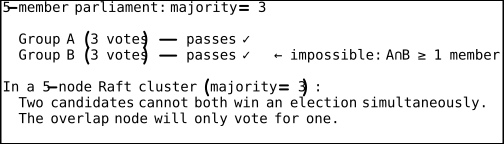
This is why Raft is safe: quorum intersection guarantees that no two leaders can be elected in the same term.
Mental Model 2: The Ship with One Captain
At any moment, Raft ensures exactly one leader. The leader is the only node that accepts writes. It decides the order of operations and replicates decisions to all followers.
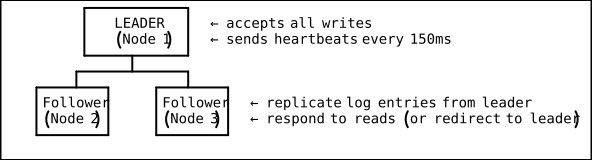
If the captain (leader) goes overboard (crashes or becomes unreachable), followers notice the absence of heartbeats, start an election, and elect a new captain — all automatically, typically within 150–300ms.
There is never a moment where two nodes legitimately act as leader in the same term. If an old leader recovers after isolation, it finds a higher term number and steps down immediately.
Mental Model 3: The Append-Only Logbook
Every write is an entry in a distributed log. The leader appends the entry first, then tells followers to append the same entry. Once a majority have confirmed the append, the entry is committed — permanently part of the log, applied to the state machine.
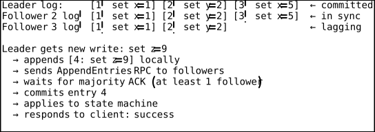
Entries are never deleted or reordered once committed. The log grows monotonically. If a follower crashes and restarts, it replays the log from the last snapshot and catches up.
The Three Sub-Problems Raft Solves
1. Leader Election
When a follower stops receiving heartbeats, it starts an election:
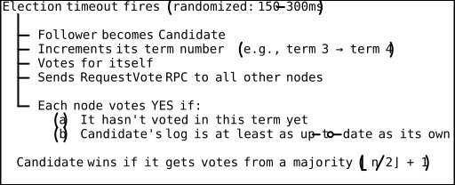
Randomized timeouts prevent perpetual split votes. If two candidates start simultaneously, one almost always fires its next election timeout first and wins before the other can split the vote again.
2. Log Replication
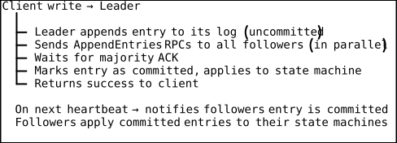
Followers that are slow or partitioned will catch up when reconnected.
The leader tracks a nextIndex per follower and retries indefinitely.
3. Safety Guarantee
Only a candidate whose log is at least as up-to-date as a majority of nodes can win an election. This prevents a stale node (that missed recent commits) from becoming leader and overwriting committed data.
"Up-to-date" comparison:
1. Higher last log term wins.
2. If same last log term, longer log wins.
This means: every committed entry will be present on the next leader’s log, by construction.
The Quorum Math
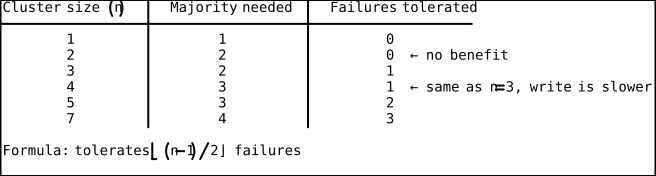
This is why odd cluster sizes are the standard: adding an even node gives no additional failure tolerance (n=4 still tolerates 1 failure like n=3), but increases write latency (must wait for 3 ACKs instead of 2).
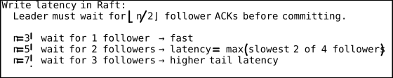
The sweet spot for most systems is n=3 (tolerates 1 failure, low write latency) or n=5 (tolerates 2 failures, moderate latency).
Where Raft Runs in the Cloud
| System | How Raft is used |
|---|---|
| etcd | Single Raft group for all key-value data; backbone of every Kubernetes cluster |
| CockroachDB | One Raft group per range (64 MB partition); thousands of groups per cluster |
| TiKV (TiDB) | One Raft group per region; Multi-Raft for parallelism |
| Consul | Single Raft group for service registry and config |
| AWS Aurora | Quorum-based storage (similar principle; 6 copies, 4/6 for write quorum) |
Raft vs. Active-Passive Failover
The redundancy patterns covered earlier (Active-Active, Active-Passive) are manual or externally-orchestrated failover. Raft is self-orchestrating:
| Dimension | Active-Passive with External Failover | Raft Consensus |
|---|---|---|
| Who detects leader failure? | External health check / load balancer | Raft followers (heartbeat timeout) |
| Who elects new leader? | DBA / ops / Route53 health routing | Raft election protocol |
| Time to failover | 30–120 seconds (RDS Multi-AZ) | 150–500ms |
| Risk of split-brain | Yes (if health check is wrong) | No (quorum prevents it) |
| Write consistency | Possible gap at failover | Guaranteed — committed entries are never lost |
| Use case | Stateful services, managed databases | Distributed databases, config stores, coordination |
DSA Connections
Exponential Backoff as a Recurrence Relation — Retry Timing
The exponential backoff formula delay = base * 2^attempt is a recurrence relation: T(n) = 2 * T(n-1) with T(0) = base. This is the same geometric progression that governs binary search’s halving of the search space, but in reverse — each retry doubles the wait. The added jitter (random(0, base)) transforms the deterministic recurrence into a randomized algorithm, converting a synchronized thundering herd (where all clients retry at identical times) into a uniformly distributed load across the time interval. The AWS SDK’s default backoff (base=100ms, max=20s, max_retries=3) produces the sequence 100ms, 200ms, 400ms — capped at 20s — which is O(2^n) growth bounded by a constant, the same asymptotic pattern as doubling-strategy dynamic array resizing.
Quorum Systems and Majority Voting — Raft Consensus
Raft’s core safety property — that no two leaders can coexist in the same term — relies on the pigeonhole principle applied to sets: if two groups each contain a strict majority of n nodes, their intersection is non-empty (at least one node belongs to both groups). This is the same combinatorial argument underlying quorum-based read/write protocols in distributed databases. The quorum math f = floor((n-1)/2) directly parallels the analysis of fault-tolerant voting circuits in hardware design. The document’s observation that odd cluster sizes are optimal (n=4 tolerates the same failures as n=3 but with higher write latency) is an instance of the general principle that adding a node to an even-sized quorum system increases the majority threshold without improving fault tolerance — a pure pigeonhole consequence.
Merkle Trees — Data Integrity Verification
A Merkle tree hashes data blocks at the leaves and recursively hashes pairs of child hashes up to a single root, enabling O(log n) verification that any single block is uncorrupted. In the context of cloud fault tolerance, Merkle trees are used by systems like Amazon’s DynamoDB (based on Dynamo’s anti-entropy protocol) and CockroachDB to detect and repair data divergence between replicas after a failure. When a node recovers from a crash, it exchanges Merkle tree roots with peers; if roots differ, the nodes walk down the tree to identify exactly which data ranges diverged, transferring only the O(log n) hashes and the changed blocks rather than the entire dataset. This makes post-failure repair efficient enough that Raft followers can catch up quickly, keeping the cluster’s MTTR low.
State Machine Replication — Deterministic Finite Automata
Raft’s replicated log is an implementation of the state machine replication paradigm: every node maintains an identical deterministic finite automaton (DFA), and applying the same sequence of inputs (log entries) in the same order guarantees identical states across all replicas. This is the distributed systems analog of running the same DFA on the same input string and getting the same accept/reject result. The append-only, monotonically-indexed log ensures that the transition function is applied in a total order, which is why Raft guarantees that committed entries are never lost — any new leader’s log is a prefix-or-equal of every committed sequence, preserving the DFA’s state invariant.
Key Takeaways
-
Failure is a constant, not an event. At scale, something is always broken. Design systems that continue operating despite failures.
-
Focus on MTTR, not MTBF. You cannot prevent all failures, but you can minimize recovery time. Automate detection, failover, and replacement.
-
Availability math is multiplicative for serial systems. Every serial dependency reduces overall availability. Minimize serial dependencies; add parallelism (redundancy) at every layer.
-
Think in blast radii. Every component should fail with the smallest possible impact. Contain failures at the process, container, instance, AZ, and region levels.
-
Redundancy is not free. Active-active is efficient (both copies serve traffic) but complex. Active-passive is simpler but wastes the standby. N+1 is a pragmatic middle ground.
-
Chaos engineering proves your design. Testing in production, under controlled conditions, is the only way to know that your fault tolerance actually works.
-
Consensus is the bedrock of distributed fault tolerance. Hardware redundancy keeps nodes alive; Raft keeps them agreeing. Without consensus, redundancy produces split-brain. Use odd cluster sizes (3 or 5), understand the quorum math, and know which cloud services use Raft under the hood.
-
Circuit breakers and backoff prevent cascading failures. Without them, one failing service can bring down the entire system through timeout cascades and resource exhaustion.
-
Self-healing is the goal. Health checks detect failures, auto scaling replaces instances, circuit breakers isolate faults — all without human intervention. Aim for systems that recover automatically at 3 AM without paging anyone.